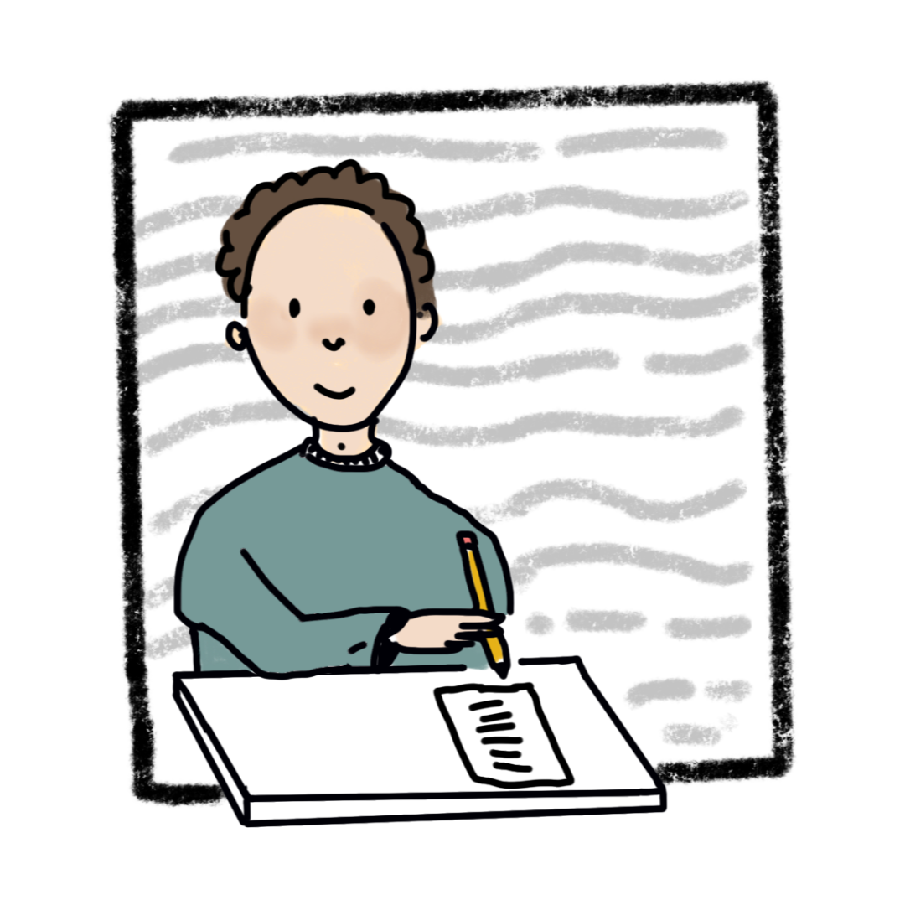

Expert educational psychology services with over 25 years of experience. Helping learners of all ages overcome challenges and reach their full potential.
Tailored assessments and strategies for individuals with a variety of learning needs.
Support for those struggling with reading, writing, and spelling, with practical strategies to build confidence and skills.
Helping those who find maths challenging, providing clear guidance and tools to make numbers easier to understand.
Assisting those with coordination and planning difficulties, with strategies to support everyday tasks and learning.
Practical support for those with attention and hyperactivity difficulties, focusing on success and self-regulation.
Evidence-based assessments tailored to each individual's unique profile, with clear and practical recommendations.
For adults and children. I use the Wechsler scales and other evidence-based tools to understand the individual's overall intellectual profile, strengths, and needs. Each assessment concludes with a detailed written report and tailored recommendations.
Comprehensive diagnostic assessments to understand learning, emotional, or behavioural needs. Reports can be tailored to meet school or institutional requirements with clear, practical recommendations.
Revisit needs each year to understand how they are progressing and whether their support remains appropriate. Ensures interventions continue to meet evolving needs.
Understanding students' abilities and learning profiles, behaviour management strategies, learning adjustment recommendations, and monitoring and reviewing progress.
Assessments for Disabled Students' Allowance (DSA) and Access Arrangements including extra time in examinations. Supporting students through the process to ensure they receive the accommodations they need.

Katherine Sharkey is an educational and child psychologist with more than 25 years' experience. She has worked in private practice since 2001, whilst continuing to work for local authorities on a locum basis, keeping up with all aspects of current practice in both primary and secondary education.
She also works extensively with universities. Her qualifications include a bachelor's degree in psychology and master's degrees in child development and educational psychology. She holds a postgraduate certificate in education and worked as a teacher before becoming a psychologist.
Katherine is based in London (Marylebone) and Yorkshire, with thorough knowledge of private and local authority provision in both areas.
Real feedback from families who have worked with Katherine.
"Katherine was incredibly thorough and compassionate. Her assessment gave us the clarity we needed to support our son's learning, and the school has fully implemented her recommendations."— Parent of Year 4 pupil, London
"Katherine immediately put our daughter at ease during the assessment. The report was detailed, practical, and really helped us understand her needs."— Parent of Year 7 pupil, Yorkshire
"We'd struggled for years to get the right support for our child's dyslexia. Katherine's assessment was a turning point — clear, professional, and genuinely caring."— Parent of Year 5 pupil, London
All fees include a detailed written report with personalised recommendations. No hidden costs.
Comprehensive cognitive or educational assessment for adults and children
Prices are indicative and may vary depending on individual circumstances. Please get in touch for a precise quote.
Common questions about visiting an educational psychologist and what to expect.
Fill in the form below or get in touch directly. I aim to respond within 24 hours.
London (Marylebone) & Yorkshire
In-person appointments available